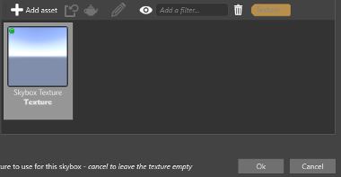

スカイボックス ライト
初級 デザイナー プログラマー
スカイボックス ライトは、スカイボックスによって放射されるアンビエント ライトです。Stride は、スカイボックスのキューブマップを分析し、イメージベースのライティング (Wikipedia) を使用してライティングを生成します。

スカイボックスを光源として使用するために、シーンにスカイボックスを実際に表示する必要はありません。たとえば、屋内の場所から空が一部分しか見えない場合 (部屋の窓を通して見る場合など)、スカイボックスを使用してシーンをライティングするのが望ましくないことがあります。アンビエント ライトはシャドウの影響を受けないので、屋内のスペースを含む、シーンのすべての部分をライティングします。
スカイボックスによるシーンのライティング方法
次の画像では、2 つの純粋な拡散マテリアルに対するアンビエント ライティングとスカイボックス ライティングの違いを示します。
| アンビエント ライティング | スカイボックス ライティング
| ---------------------------------------------------- | -------------------------------
| | | |
次の図では、金属プロパティと光沢プロパティが異なるマテリアルに対するスカイボックス ライティングの効果を示します。
| マテリアル プラスティック | 金属 100% 光沢 50% | 金属 100% 光沢 100% |
|---|---|---|
 |
 |
スカイボックス テクスチャの色の反映に注目してください。
スカイボックス ライトをセットアップする
スカイボックスをライトとして使用するには、スカイボックス アセットを追加した後、ライト コンポーネントでそれを選択する必要があります。
［Asset view］で
 をクリックします。
をクリックします。［Miscellaneous］ >［Skybox］の順に選択します。

アセット ピッカーが開きます。
プロジェクト アセットからスカイボックス テクスチャ (
.ddsファイル) を選択し、［Ok］をクリックします。
指定したテクスチャでスカイボックス アセットが追加されます。
スカイボックス ライトにするエンティティを選択します。
［Properties grid］ (既定では右側) で、［Add component］をクリックし、[Light] を選択します。

［Light］コンポーネントのプロパティで、［Light］の［Skybox］を選択します。

手のアイコンをクリックして、アセット ピッカーを開きます。
光源として使用するスカイボックス アセットを選択し、［OK］をクリックします。

ライト コンポーネントは、スカイボックス アセットを使用してシーンをライティングします。
スカイボックス アセットのプロパティ
スカイボックスをライトとして使用すると、Stride はそれを、圧縮形式 (球面調和 (Wikipedia)) と、異なる種類のマテリアルをライティングするためのテクスチャの両方として使用します。両方の詳細を、スカイボックス アセットのプロパティで制御できます。

| プロパティ | 説明 |
|---|---|
| CubeMap | スカイボックスに対して使用されるキューブマップ アセットです |
| Specular Only | スカイボックスを鏡面反射ライティングに対してのみ使用します |
| Diffuse SH Order | 圧縮されたスカイボックスの詳細のレベルです。拡散ライティング (光沢のないマテリアル) に対して使用されます。Order5 は Order3 より詳細です |
| Specular CubeMap Size | 鏡面反射ライティングに使用されるテクスチャのサイズです。テクスチャが大きいほど詳細になります。 |
スカイボックス ライトのプロパティ

| プロパティ | 説明 |
|---|---|
| Intensity | ライトの強度です。 |
| Culling Mask | ライトによって影響を受けるエンティティ グループです。既定では、すべてのグループが影響を受けます。 |
コード例
次のコードは、スカイボックス ライトとその強度を変更します。
public Skybox skybox;
public void ChangeSkyboxParameters()
{
// エンティティからライト コンポーネントを取得する
var light = Entity.Get<LightComponent>();
// ライト コンポーネントからスカイボックス ライトの設定を取得する
var skyboxLight = light.Type as LightSkybox;
// 既存のスカイボックスを置き換える
skyboxLight.Skybox = skybox;
// スカイボックス ライトの強度を変更する
light.Intensity = 1.5f;
}